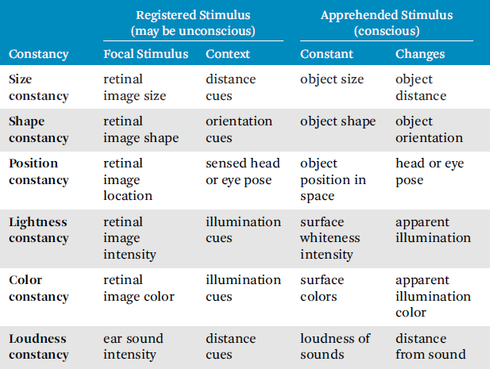

Our perception of the world and the objects within it is relatively constant. A perceptual constancy is the impression that an object tends to remain constant in consciousness even though conditions (e.g., changes in lighting, viewing position, head turning) may change. Perceptual constancies occur partly due to the observer’s understanding and expectation that objects tend to remain constant in the world.
Perceptual constancies have two major phases: registration and apprehension [Coren et al. 1999].
Registration is the process by which changes in the proximal stimuli are encoded for processing within the nervous system. The individual need not be consciously aware of registration. Registration is normally oriented on a focal stimulus, the object being paid attention to. The surrounding stimuli are the context stimuli.
Apprehension is the actual subjective experience that is consciously available and can be described. During apprehension, perception can be divided into two properties: object properties and situational properties. Object properties tend to remain constant over time. Situational properties are more changeable, such as one’s position relative to an object or the lighting configuration.
Table 10.1 summarizes some common perceptual constancies that are further discussed below [Coren et al. 1999].
Why do objects not seem to change size when we walk toward them? After all, the projected size of an object on the retina changes as we walk toward or away from it. For example, if we walk toward an animal in the distance then we do not gasp in horror as if a monster is growing. The sensory reality is that the animal projected on our retina is growing as we walk toward it, but we do not perceive the animal is changing size. Our past experiences and mental model of the world tells us things do not change size when we walk toward them—we have learned object properties remain constant independent of our movement through the world. This learned experience that objects tend to stay the same size is called size constancy.
Table 10.1 Perceptual constancies. (Adapted from Coren et al. [1999])

Size constancy is largely dependent on the apparent distance of an object being correct, and in fact changes in misperceived distance can change perceived size. The more distance cues (Section 9.1.3) available, the better size constancy. When only a small number of depth cues are available, distant objects tend to be perceived as too small.
Size constancy does not seem to be consistent across all cultures. Pygmies, who live deep in the rain forest of tropical Africa, are not often exposed to wide-open spaces and do not have as much opportunity to learn size constancy. One Pygmy, outside of his typical environment, saw a herd of buffalo at a distance and was convinced he was seeing a swarm of insects [Turnbull 1961]. When driven toward the buffalo, he became frightened and was sure some form of witchcraft was at work as the insects “grew” into buffalo.
Size constancy does not occur only in the real world. Even with first-person video games containing no stereoscopic cues, we still perceive other characters and objects to remain the same size even when their screen size changes. With VR, size constancy can be even stronger due to motion parallax and stereoscopic cues. However, if those different cues are not consistent with each other, then the perception of size constancy can be broken (e.g., objects become smaller on the screen, but our stereo vision tells us the object is coming closer). The same applies for shape constancy and position constancy described below.
Shape constancy is the perception that objects retain their shape, even as we look at them from different angles resulting in a changing shape of their image on the retina. For example, we perceive the rim of a coffee mug as a circle even though it is only a circle on the retina when viewed from directly above (otherwise it is an ellipse when viewed at an angle or a line when viewed straight on). The reason for this is experience tells us cups are round so we label in our minds that the rims of cups are circular. Imagine the chaos that would result if we all described objects as the shapes that appear on our retinas with each changing moment.
Not only does shape constancy provide us with consistent perception of objects, but it helps us to determine the orientation and relative depth of those objects.
Position constancy is the perception that an object appears to be stationary in the world even as the eyes and the head move [Mack and Herman 1972]. A perceptual matching process between motion on the retina and extra-retinal cues causes the motion to be discounted.
The real world remains stable as one rotates the head. Turning the head 10° to the right causes the visual field to rotate to the left by 10° relative to the head. The displacement ratio is the ratio of the angle of environmental displacement to the angle of head rotation. The stability of the real world is independent of head motion and thus has a displacement ratio of zero. If the environment rotates with the head then the displacement ratio is positive. Likewise, if the environment rotates against head direction the displacement ratio is negative.
Minifying glasses, i.e., glasses with concave lenses, increase the displacement ratio and cause objects to appear to move with head rotation. Magnifying glasses decrease the displacement ratio below zero and cause objects to appear to move in the opposite direction as head rotation. Rendering a different field of view than the displayed field of view causes similar effects as minifying/magnifying glasses. For HMDs, this is perceived as scene motion that can result in motion sickness (Chapter 12).
The range of immobility is the range of displacement ratio where position constancy is perceived. Wallach and Kravitz [1965b] determined the range of immobility to be 0.04–0.06 displacement ratios wide. If an observer rotates her head 100° to the right, then the environment can move by up to 2°–3° with or against the direction of her head turn without her noticing that movement.
In an untracked HMD, the scene moves with the user’s head and has a displacement ratio of one. In a tracked HMD with latency, the scene first moveswith the direction of the head turn (a positive displacement ratio), then after the head decelerates the scene moves back toward its correct position,against the direction of the head turn (a negative displacement ratio), after the system has caught up to the user [Jerald 2009].
Lack of position constancy can result from a number of factors and can be a primary cause of motion sickness as discussed in Part III.
Lightness constancy is the perception that the lightness (Section 8.1.2) of an object is more a function of the reflectance of an object and intensity of the surrounding stimuli rather than the amount of light reaching the eye [Coren et al. 1999]. For example, white paper and black coal still appear to be white and black even as lighting conditions change. Lightness constancy based on relative intensity to surrounding objects holds over a million-to-one range of illumination. Lightness constancy is also affected by shadows, the shape of the object and distribution of illumination on it, and the relative spatial relationship among objects.
Color constancy is the perception for the colors of familiar objects to remain relatively constant even under changing illumination. When a shadow partially falls on a book, we do not perceive the shadowed part of the book to change colors. Like lightness constancy, color constancy is largely due to the relationship with surrounding stimuli. The greater the number of objects and colors in the scene that can serve as comparison stimuli, the greater the perception of color constancy. Prior experience (i.e., top-down processing) also is used to maintain color constancy. A banana almost always appears yellow even in different lighting conditions in part because we know bananas are yellow.
Loudness constancy is the perception that a sound source maintains its loudness even when the sound level at the ear diminishes as the listener moves away from the sound source. Like any constancy, loudness constancy only works up to some threshold.
Humans must be able to adapt to new situations in order to survive. We must not only adapt to an ever-changing environment, but also adapt to internal changes such as neural processing times and spacing between the eyes, both of which change over a lifetime. When studying perception in VR, investigators must be aware of adaptation, as it may confound measurements and change perceptions.
Adaptation can be divided into two categories: sensory adaptation and perceptual adaptation [Wallach 1987].
Sensory adaptation alters a person’s sensitivity to detect a stimulus. Sensitivity increases or decreases over time; one starts or stops detecting a stimulus after a period of constant stimulus intensity or after removal of that stimulus. Sensory adaptations are typically localized and only last for short periods of time. Dark adaptation is an example of sensory adaptation.
Dark adaptation increases one’s sensitivity to light in dark conditions. Light adaptation decreases one’s sensitivity to light in light conditions. The sensitivity of the eye changes by as much as six orders of magnitude, depending on the lighting of the environment.
The cones of the eye (Section 8.1.1) reach maximum dark adaptation in approximately 10 min after initiation of dark adaptation. The rods reach maximum dark adaptation in approximately 30 min after initiation of dark adaptation. Complete light adaptation occurs within 5 min after initiation of light adaptation. Dark adaptation causes a person’s perception of stimuli to be delayed as discussed in Section 15.3. Occasionally presenting bright large stimuli can keep users light-adapted. Rods are relatively insensitive to red light. Thus, if red lighting is used, rods will dark-adapt whereas cones will maintain high acuity.
Perceptual adaptation alters a person’s perceptual processes. Welch [1986] defines perceptual adaptation to be “a semipermanent change of perception or perceptual-motor coordination that serves to reduce or eliminate a registered discrepancy between or within sensory modalities or the errors in behavior induced by this discrepancy.” Six major factors facilitate perceptual adaptation [Welch and Mohler 2014]:
• stable sensory rearrangement
• active interaction
• error-corrective feedback
• distributed exposures over multiple sessions
• incremental exposure to the rearrangement
Dual adaptation is the perceptual adaptation to two or more mutually conflicting sensory environments that occurs after frequently alternating between those conflicting environments. Going back and forth between a VR experience and the real world may be less of an issue for seasoned users.
One of the first examples of extreme perceptual adaptation goes back to the late 1800s. George Stratton wore inverting goggles that turned his visual world upside-down and right-side-left over a period of eight days [Stratton 1897]. At first, everything seemed backwards and it was difficult to function, but he slowly adapted over several days’ time. Stratton eventually achieved near full adaptation so that the world seemed right-side-up and he could fully function while wearing the inverting goggles.
The compensation process that keeps the environment perceptually stable during head rotation can be altered by perceptual adaptation. Wallach [1987] calls this visual-vestibular sensory rearrangement “adaptation to constancy of visual direction,” and in this book it is called position-constancy adaptation to be consistent with position constancy described in Section 10.1.3.
VOR (Section 8.1.5) adaptation is an example of position-constancy adaptation. Perhaps the most common form of position-constancy adaptation is eyeglasses that at first cause the stationary environment to seemingly move during head movements but is eventually perceptually stabilized after some use. In a more extreme case, Wallach and Kravitz [1965a] built a device where the visual environment moved against the direction of head turns with a displacement ratio (Section 10.1.3) of 1.5. They found that in only 10 minutes time, subjects partially adapted such that perceived motion of the environment during head turns subsided. After removal of the device, subjects reported a negative aftereffect (Section 10.2.3) where the environment appeared to move with head turns and appeared stable with a mean mean displacement ratio of 0.14. Draper [1998] found similar adaptation for subjects in HMDs when the rendered field of view was intentionally modified to be different from the true field of view of the HMD.
People are able to achieve dual adaptation of position constancy so that they perceive a stable world for different displacement ratios if there is a cue (e.g., glasses on the head or scuba-diver face masks; Welch 1986).
As discussed in Section 9.2.2, our conscious lags behind actual reality by hundreds of milliseconds. Temporal adaptation changes how much time in the past our consciousness lags.
Until relatively recently, no studies have been able to show adaptation to latency (although the Pulfrich pendulum effect from Section 15.3 suggests dark adaptation also causes some form of temporal adaptation). Cunningham et al. [2001a] found behavioral evidence that humans can adapt to a new intersensory visual-temporal relationship caused by delayed visual feedback. A virtual airplane was displayed moving downward with constant velocity on a standard monitor. Subjects attempted to navigate through an obstacle field by moving a mouse that controlled only left/right movement. Subjects first performed the task in a pre-test with a visual latency of 35 ms. Subjects were then trained to perform the same task with 200 ms of additional latency introduced into the system. Finally, subjects performed the task in a post-test with the original minimum latency of 35 ms. The subjects performed much worse in the post-test than in the pre-test.
Toward the end of training, with 235 ms of visual latency, several subjects spontaneously reported that visual and haptic feedback seemed simultaneous. All subjects showed very strong negative aftereffects. In fact, when the latency was removed, some subjects reported the visual stimulus seemed to move before the hand that controlled the visual stimulus, i.e., a reverse of causality occurred, where effect seemed to occur before cause!
The authors reasoned that sensorimotor adaptation to latency requires exposure to the consequences of the discrepancy. Subjects in previous studies were able to reduce discrepancies by slowing down their movements when latency was present, whereas in this study subjects were not allowed to slow the constant downward velocity of the airplane.
These results suggest VR users might be able to adapt to latency, thereby changing latency thresholds over time. Susceptibility to VR sickness in general is certainly reduced for many individuals, and VR latency-induced sickness is likely specifically reduced. However, it is not clear if VR users truly perceptually adapt to latency.
Negative aftereffects are changes in perception of the original stimulus after the adapting stimulus has been removed. Negative aftereffects occur with both sensory adaptation and perceptual adaptation. These negative aftereffects provide the most common measure of adaptation [Cunningham et al. 2001a]. Aftereffects as they relate to VR usage are discussed in Section 13.4.
Our senses continuously provide an enormous amount of information that we can’t possibly perceive all at once. Attention is the process of taking notice or concentrating on some entity while ignoring other perceivable information. Attention is far more than simply looking around at things—attending brings an object to the forefront of our consciousness by enhancing the processing and perception of that object. As we pay more attention, we start to notice more detail and perhaps realize the item is different from that which we first thought. Our perception and thinking becomes sharp and clear, and the experience is easy to recall. Attention informs us what is happening, enables us to perceive details, and reduces response time. Attention also helps bind different features, such as shape, color, motion, and location, into perceptible objects (Section 7.2.1).
Our brains have limited physiological capacity and processing capabilities, and attention can be thought of as the allocation of these limited resources. To prevent overloading, the mind-body has evolved to apply more resources to a single area of interest at a time. For example, the fovea is the only location on the retina that provides high-resolution vision. We also filter out events not relevant to our current interests, attending to only one of several available sources of information about the world.
Perceptual capacity is one’s total capability for perceiving. Perceptual load is the amount of a person’s perceptual capacity that is currently being used. Easy or well-practiced tasks have low perceptual loads whereas difficult tasks, such as learning a new skill, have higher perceptual loads.
As discussed in Section 7.9.3, deletion filtering omits certain aspects of incoming data by selectively paying attention to only parts of the world. Things we do not attend to are less distinct and more difficult to remember (or not even perceived as described below as inattentional blindness). Filtering out information allows little of that information to make a lasting impression.
The personal growth industry claims the reticular activating system serves as an automatic goal-seeking mechanism by bringing those things that we think about to the forefront of our attention and filtering out things that we don’t care about. Unfortunately, none of these “backed by scientific evidence” claims include references, and a literature search results in little or no scientific evidence supporting such claims. Whereas the reticular activating system does enhance wakefulness and general alertness, this part of the brain is only one small piece of the attention puzzle. However, regardless of what parts of the brain control our attention, the concept of perceiving and attending to what we think about is important.
The cocktail party effect is the ability to focus one’s auditory attention on a particular conversation while filtering out many other conversations in the same room. Shadowing is the act of repeating verbal input one is receiving, often among other conversations. Shadowing is easier if the messages come from two different spatial locations, are different pitches, and/or are presented at different speeds.
Inattentional blindness is the failure to perceive an object or event due to not paying attention and can occur even when looking directly at it. Researchers created a video of two teams playing a game similar to basketball and observers were told to count the number of passes, causing them to focus their attention on one of the teams [Simons and Chabris 1999]. After 45 seconds, either a woman carrying an umbrella or a person dressed in a gorilla suit walked through the game over a period of 5 seconds. Amazingly, nearly half of all observers failed to report seeing the woman or the gorilla.
Inattentional blindness also refers to more specific types of perceptual blindness. Discussed below are change blindness, choice blindness, the video overlap phenomenon, and change deafness.
Change blindness. Change blindness is the failure to notice a change of an item on a display from one moment to the next. Change blindness can most easily be demonstrated by making a change in a scene when the display is blanked or there is a flash of light between images. Changes in the background are noticed less often than changes in the foreground.
Change blindness can occur even when observers are explicitly told to look for a change. Continuity errors are changes between shots in film, and many viewers fail to notice significant changes. Viewers also often miss changes when those changes are introduced during saccadic eye movement.
Most people believe they are good at detecting changes and are not aware of change blindness. This lack of awareness is called change blindness blindness.
Choice blindness. Choice blindness is the failure to notice that a result is not what the person previously chose. When people believe they chose a result, when in fact they didn’t, they often justify with reasons why they “chose” that unchosen result.
The video overlap phenomenon. The video overlap phenomenon is the visual equivalent of the cocktail party effect. When observers pay attention to a video that is superimposed on another video, they can easily follow the events in one video but not both.
Change deafness. Change deafness is a physical change in an auditory stimulus that goes unnoticed by a listener. Attention influences change deafness.
Whereas conscious attention is not required to get the “gist” of a scene, we do need to direct attention toward specific parts of a scene while ignoring other parts to perceive details.
Attentional gaze [Coren et al. 1999] is a metaphor for how attention is drawn to a particular location or thing in a scene. Information is more effectively processed at the place where attention is directed. Attention is like a spotlight or zoom lens that improves processing when directed toward a specific location. Due to the ability to covertly focus attention, attentional gaze does not necessarily correspond to where the eye is looking. Attentional gaze can be directed to a local/small aspect of a scene or to a more global/larger area of a scene. We can also choose to attend to a single feature, such as texture or size, rather than the entirety of an object. However, we usually cannot be drawn to more than one location at any single point in time.
Attentional gaze can shift faster than the eye. Attentional gaze resulting from a visual stimulus starts in the primitive visual pathway (Section 8.1.1) resulting in cells firing as fast as 50 ms after a target is flashed, whereas eye saccades often take more than 200 ms to start moving toward that stimulus.
Auditory attention also acts as if it has a direction and can be drawn to particular spatial locations.
We do not passively see or hear, but we actively look or listen in order to see and hear. Our experience is largely what we agree to attend to; we don’t just passively sit, letting everything enter into our minds. Instead we actively direct our attention to focus on what is important to us—our interest and goals that guide top-down processing.
Top-down processing as it relates to attention is associated with scene schemas. A scene schema is the context or knowledge about what is contained in a typical environment that an observer finds himself in. People tend to look longer at things that seem out of place. People also notice things where they expect them—e.g., we are more likely to look for and notice stop signs at intersections than in the middle of a city block.
Sometimes our past experience or a cue tells us where or when an important event may happen in the near future. We prepare for the event’s occurrence by aligning attention with the location and time that we expect. Preparing changes one’s attentional state. Auditory cues are especially good for grabbing the attention of a user to prepare for some important event.
Attention also is affected by the task being performed. We almost always look at an object before taking action on that object, and eye movements typically precede motor action by a fraction of a second, providing just-in-time information needed to interact. Observers will also change their attention based on their probabilistic estimates of dynamic events. For example, people will pay more attention to a wild animal or someone acting suspiciously.
Attentional capture is a sudden involuntary shift of attention due to salience. Salience is the property of a stimulus that causes it to stick out from its neighbors and grab one’s attention, such as a sudden flash of light, a bright color, or a loud sound. The attentional capture reflex occurs due to the brain having a need to update as quickly as possible its mental model of the world that has been violated [Coren et al. 1999]. If the same stimulus repeatedly occurs, then it becomes an expected part of the mental model and the orienting reflex is weakened.
A saliency map is a visual image that represents how parts of the scene stand out and capture attention. Saliency maps are created from characteristics such as color, contrast, orientation, motion, and abrupt changes that are different from other parts of the scene. Observers first fixate on areas that correlate with strong areas of the saliency map. After these initial reflexive actions, attention then becomes more active.
Attention maps provide useful information of what users actually look at (Figure 10.1). Measuring and visualizing attention maps can be extremely useful for determining what actually attracts users’ attention. This can be extremely useful as part of the iterative content/interaction creation process by increasing creators’ understanding of what draws users toward desired behaviors. Although eye tracking is ideal for creating quality attention maps, less precise attention maps can be created with HMDs by assuming the center of the field of view is what users are generally paying attention to.
Task-irrelevant stimuli are distracting information that is not relevant to the task with which we are involved and can result in decreased performance. Highly salient stimuli are more likely to cause distraction. Task-irrelevant stimuli have more of an impact on performance when a task is easy.
Figure 10.1 3D attention maps show what users most pay attention to. (From Pfeiffer and Memili [2015])
We constantly monitor the environment by shifting both overtly and covertly.
Overt orienting is the physical directing of sensory receptors toward a set of stimuli to optimally perceive important information about an event. The eyes and head reflexively turn toward (with the head following the eyes) salient stimuli. Orienting reflexes include postural adjustments, skin conductance changes, pupil dilation, decrease in heart rate, pause in breathing, and constriction of the peripheral blood vessels.
Covert orienting is the act of mentally shifting one’s attention and does not require changing the sensory receptors. Overt and covert orienting together result in enhanced perception, faster identification, and improved awareness of an event. It is possible to covertly orient without an overt sign that one is doing so. Attentional hearing is more often covert than seeing.
Visual scanning is the looking from place to place in order to most clearly see items of interest on the fovea. A fixation is a pause on an item of interest and a saccade is a jerky eye movement from one fixation to the next (Section 8.1.5). Even though we are often not aware of saccadic eye movements, we make such movements about three times per second. Scanning is a form of overt orienting. Inhibition of return is the decreased likelihood of moving the eyes to look at something that has already been looked at.
Searching is the active pursuit of relevant stimuli in the environment, scanning one’s sensory world for particular features or combinations of features.
A visual search is looking for a feature or object among a field of stimuli and can be either a feature search or a conjunction search. A feature search is looking for a particular feature that is distinct from surrounding distractors that don’t have that feature (e.g., an angled line). A conjunction search is looking for particular combinations of features. Feature searches are generally easier to do than conjunction searches.
For feature searches, the number of distracting items does not affect searching speed and the search is said to operate in parallel. In fact, feature searches sometimes result in the object being searched for to seem to “pop out” from a surrounding blur of irrelevant features. One explanation for this is that our perceptual system groups similar items together and divides scenes into figure and ground (Section 20.4) where the figure is what is being searched for.
For conjunction searches, we compare each object with what we are looking for and respond only when a match is found. Thus, conjunction searches are sometimes referred to as serial searches. Because conjuction searches are performed serially, they are slower than feature searches and are dependent on the number of items being searched.
Vigilance is the act of maintaining careful attention and concentration for possible danger, difficulties, or perceptual tasks, often with infrequent events and prolonged periods of time. After an initial time of conducting a vigilant task, sensitivity to stimuli decreases with time due to fatigue.
When in the state of flow, people lose track of time and that which is outside the task being performed [Csikszentmihalyi 2008]. They are at one with their actions. Flow occurs at just the proper level of difficulty: difficult enough to provide a challenge that requires continued attention, but not so difficult that it invokes frustration and anxiety.
Perception not only provides information about the environment but also inspires action, thereby turning an otherwise passive experience into an active one. In fact, some researchers believe the purpose of vision is not to create a representation of what is out there but to guide actions. Taking action on information from our senses helps us to survive so we can perceive another day. This section provides a high-level overview of action and how it relates to perception. Part V focuses on how we can design VR interfaces for users to interact with.
The continuous cycle of interaction consists of forming a goal, executing an action, and evaluating the results (the perception) and is broken down in more detail in Section 25.3. Predicting the result of an action is also an important aspect of perception. See Section 7.4 for an example of how prediction and unexpected results can result in the misperception of the world moving about the viewer.
As discussed in Section 9.1.3, intended actions affect distance perception. Performance can also affect perception—for example, successful batters perceive a ball to be bigger than less successful batters, recent tennis winners report lower nets, and successful field goal kickers estimate goal posts to be further apart [Goldstein 2014]. Perception of how an object might be interacted with (Section 25.2.2) can influence our perception of it. Visual motion can also cause vection (the sense of self-motion; Section 9.3.10) and postural instability (Section 12.3.3).
A large body of evidence suggests visually guided action is primarily processed through the dorsal stream and visual perception without action is primarily processed through the ventral pathway (Section 8.1.1). This results in humans using different metrics and different frames of reference depending on if they are purely observing or also taking action. For example, length estimation is biased when visually observing a Ponzo illusion (Section 6.2.4), but the hand is not fooled by the illusion when reaching out to grab the Ponzo lines [Ganel et al. 2008]. That is, the illusion works for perception (the length estimation task) but not for action (the grasping task).
Although mirror neurons are controversial and individual mirror neurons have not yet been proven to exist in humans, the concept of mirror neurons is still useful to think about how action and perception are related. Mirror neurons respond in a similar way whether an action is performed or the same action is observed [Goldstein 2014]; i.e., mirror neurons seem to respond to what is happening, independently of who is performing the action. Most mirror neurons are specialized to respond to only one type of action, such as grasping or placing an object somewhere, and the specific type of object that is acted upon or observed has little effect on the neuron’s response. Mirror neurons may be important for understanding actions and intentions of other people, learning new skills by imitation, and communicating emotions such as empathy.
Regardless of whether or not individual mirror neurons actually exist in humans, the concept is useful to think about when designing VR interactions. For example, watching a computer-controlled character perform an action can be useful for learning new interaction techniques.
Navigation is determining and maintaining a course or trajectory to an intended location.
Navigation tasks can be divided into exploration tasks and search tasks. Exploration has no specific target, but is used to browse the space and build knowledge of the environment [Bowman et al. 2004]. Exploration typically occurs when entering a new environment to orient oneself to the world and its features. Searching (Section 10.3.2) has a specific target, where the location may be unknown (naive search) or previously known (primed search). In the extreme, naive search is simply exploration, albeit with a specific goal.
Navigation consists of wayfinding (the mental component) and travel (the motoric component), and the two are intimately tied together [Darken and Peterson 2014].
Wayfinding is the mental element of navigation that does not involve actual physical movement of any kind but only the thinking that guides movement. Wayfinding involves spatial understanding and high-level thinking, such as determining one’s current location, building a cognitive map of the environment, and planning/deciding upon a path from the current location to a goal location. Landmarks (distinct cues in the environment) and other wayfinding aids are discussed in Sections 21.5 and 22.1. Eye movements and fMRI scans show that people look at environmental wayfinding aids more often than other parts of the scene and the brain automatically distinguishes decision point location/cues to guide navigation [Goldstein 2014].
Wayfinding works through
• perception: perceiving and recognizing cues along a route,
• attention: attending to specific stimuli that serve as landmarks,
• memory: using top-down information stored from past trips through the environment, and
• combining all this information to create cognitive maps to help relate what is perceived to where one currently is and wishes to go next.
Travel is the act of moving from one place to another and can be accomplished in many different ways (e.g., walking, swimming, driving, or for VR, pointing to fly). Travel can be seen as a continuum from passive transport to active transport. The extreme of passive transport occurs automatically without direct control from the user (e.g., immersive film). The extreme of active transport consists of physical walking and, to a lesser extent, interfaces that replicate human bipedal motion (e.g., treadmill walking or walking in place). Most VR travel is somewhere in between passive and active, such as point-to-fly or viewpoint control via a joystick. Various VR travel techniques are discussed in Section 28.3.
People rely on both optic flow (Section 9.3.3) and egocentric direction (direction of a goal relative to the body—see Sections 9.1.1 and 26.2) in a complementary manner as they travel toward a goal, resulting in robust locomotion control [Warren et al. 2001]. When flow is reduced or distorted, behavior tends to be influenced more by egocentric direction. When there is greater flow and motion parallax, behavior tends to be more influenced by optical flow.
Many senses can contribute to the perception of travel including visual, vestibular, auditory, tactile, proprioceptive, and podokinetic (motion of the feet). Visual cues are the dominant modality for perceiving travel. Chapter 12 discusses how motion sickness can result when visual cues do not match other sensory modalities.